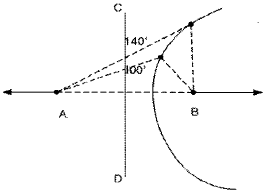

항로표지기능사 (2002-12-08 기출문제)
1과목: 항로표지 전원관리
1. 비교적 단시간 내에 보통 충전전류의 2∼3배의 전류로 충전하는 방식을 무엇이라고 하는가?
- 보통충전
- 부동충전
- 급속충전
- 균등충전
(정답률: 98%)

2. 제어모듈내의 설정전압비교에 의하여 점등되며, 충전전압이 계속 증가하여 만 충전 상태에 도달하면 작동되는 램프는 무엇인가?
- 만충전램프
- 과방전 경보램프
- 역류방지 경보램프
- 수동제어 경보램프
(정답률: 93%)
3. 발전기를 구동하는 엔진의 출력은 일반적으로 무엇으로 [미터법 마력]표시되고 있는가?
- [H.P]
- [P.S]
- [S.H]
- [P.H]
(정답률: 72%)
4. 태양광발전시스템 구성 중 태양전지 어레이 및 축전지에서 공급되는 직류전력을 교류전력으로 변환시켜 부하에 공급하는 장치를 무엇이라 하는가?
- 정류기
- 교류분전반
- 전력제어장치
- 직· 교류변환장치(인버터)
(정답률: 91%)
5. 납축전지의 전해액으로 사용하는 것으로 맞는 것은?
- 물
- 벤젠
- 알콜
- 묽은황산
(정답률: 89%)
6. 고정식 납축전지의 경우 만충전시의 전해액 비중이 1.215(25° C) 일때 단전지당 기전력은?
- 2.025 V
- 2.045 V
- 2.065 V
- 2.085 V
(정답률: 61%)
7. 발전기의 구성요소 가운데 기자력을 형성하는 부분은?
- 전기자 권선
- 계자 권선
- 정류자
- 슬립링
(정답률: 82%)
8. 전로의 배선공사 및 수리가 완료되면 송전하기 전에 실시하는 시험은 무엇인가?
- 절연시험 및 절연내력시험
- 전압시험 및 저항시험
- 도전시험 및 절연시험
- 전압시험 및 절연내력시험
(정답률: 69%)
9. 발전기의 각 부의 온도를 측정하는 방법 중 해당되지 않는 것은?
- 온도계법
- 전압측정법
- 저항법
- 매입 온도계법
(정답률: 75%)
10. 다음 중 자동전압조정기를 의미하는 약어는 무엇인가?
- DC
- AC
- AVR
- OCR
(정답률: 90%)
11. 태양 전지 종류 중 틀린 것은?
- 결정질 실리콘 태양 전지
- 주발전용 태양 전지
- 비정질 실리콘 태양 전지
- 화합물 반도체 태양 전지
(정답률: 82%)
12. 납축전지의 전해액이 결빙되는 시점의 비중은 얼마인가?
- 1.160
- 1.120
- 1.100
- 1.060
(정답률: 75%)
13. 1쿨롱의 전기량이 일정하게 이동할 때 1J의 일을 하는 전위차를 무엇이라 하는가?
- 1[V]
- 1[Q]
- 1[A]
- 1[J]
(정답률: 75%)
14. 자기방전된 축전지의 상태는?
- 방전중 전해액 비중의 강하율이 크다.
- 단자전압이 3[V]로 상승한다.
- 전해액의 감소가 심하다.
- 방전중 온도가 매우 높다.
(정답률: 59%)
15. 축전지 전해액의 누액 또는 감소의 원인과 관계가 없는 것은?
- 전조의 파손 또는 균열
- 과충전이 반복될 때
- 충전전류가 클 때
- 전해액이 불순할 때
(정답률: 51%)
16. 충전기로부터 축전지와 부하를 병렬로 연결하여 그 회로의 전압을 축전지의 전압보다 약간 높게 유지시켜 사용하는 충전은?
- 합성충전
- 부동충전
- 병렬충전
- 직렬충전
(정답률: 88%)
17. 태양전지 어레이에서 공급된 전력을 축전지 및 직류부하에 맞게 조정 및 제어하는 장치는?
- 전력조절기(전력제어장치)
- 분전반
- 인버터
- 변압기
(정답률: 89%)
18. 100V의 전원에 어떤 저항체을 연결하였을 때, 5A의 전류가 흘렀다면 이 저항체의 전기 저항은?
- 20Ω
- 25Ω
- 200Ω
- 250Ω
(정답률: 90%)
19. 축전지 3개를 병렬 연결하였을 때의 현상으로 옳은 것은?
- 전압은 축전지 3개 전압의 합만큼 증가한다.
- 전류는 변함이 없고 일정하다.
- 전류와 전압 모두 축전지 수만큼 증가한다.
- 전류는 축전지 수만큼 증가한다.
(정답률: 73%)
20. 전기에너지를 충전기를 이용하여 화학에너지로 변환시키는 것을 무엇이라고 하는가?
- 축전지
- 건전지
- 충전
- 전류
(정답률: 77%)
2과목: 고정 및 부표항로표지
21. 부표를 설치하는 목적으로 옳은 것은?
- 해상교통안전과 능률증진에 기여
- 해양오염 방지
- 유속 측정
- 풍속 측정
(정답률: 97%)
22. 가스식 등부표에 사용되는 가스가 아닌 것은?
- 아세틸렌 가스
- 프로판 가스
- 부탄 가스
- 이산화탄소
(정답률: 94%)
23. 전기 에너지를 화학 에너지로 바꾸어 저장하였다가 필요에 따라 다시 전기 에너지로 바꾸어 이용할 수 있는 장치를 무엇이라 하는가?
- 축전지
- 전동기
- 발전기
- 펌프
(정답률: 93%)
24. 오옴의 법칙(Ohm's law)이란?
- 전기도선에 흐르는 전류의 세기는 전압에 비례하고 저항에 반비례한다.
- 도선의 전기 저항은 도선의 길이에 비례하고 단면적에 반비례한다.
- 전기회로의 한점에 흘러 들어오는 전류의 총량은 흘러 나가는 총량과 같다.
- 전류에 의해서 전극에 석출되는 물질의 양은 이것에 통과한 전기량에 비례한다.
(정답률: 89%)
25. 사슬 1연의 길이는 약 얼마인가?
- 10미터
- 25미터
- 35미터
- 50미터
(정답률: 92%)
26. 축전지 취급시 주의사항 중 잘못된 것은?
- 전해액은 2일 간격으로 주입하여 전조상단에 표시된 주입지시선까지 채워야 한다.
- 충전 중에 전해액 온도가 45℃ 이상이 되면 충전을 일시 중단한다.
- 전해액 주입 후 2일 이내에 충전을 하여야 한다.
- 축전지를 청소할 때에는 면으로 된 천을 사용한다.
(정답률: 71%)
27. 등탑 및 주변 시설물의 기능유지 업무에 해당하지 않는 것은?
- 렌즈 및 등롱 부분의 청소
- 레이콘의 부착
- 시각에 의한 각부의 외관점검
- 등탑의 도장
(정답률: 93%)
28. 등부표를 항만내 등 그다지 파랑의 영향을 받지 않는 곳에 정치하기 위하여 사용하는 체인의 길이는 최소한 어느 정도가 적당한가?
- 최대수심의 1.2 ∼ 1.5 배
- 최대수심의 1.7 ∼ 1.9 배
- 최대수심의 2.1 ∼ 2.3 배
- 최대수심의 2.5 ∼ 2.8 배
(정답률: 73%)
29. 등명기에 사용하는 일광제어기의 광량 조정범위는 대략 어느 정도인가?
- 10 ± 5 [Lux] ∼ 300 ± 30 [Lux] 정도
- 200 ± 30 [Lux] ∼ 400 ± 30 [Lux] 정도
- 300 ± 30 [Lux] ∼ 500 ± 50 [Lux] 정도
- 500 ± 5 [Lux] ∼ 800 ± 80 [Lux] 정도
(정답률: 90%)
30. 다음 중 레이콘(Racon)의 기능에 대한 설명에 해당하지않는 것은?
- 레이다 화면상 중심에서 레이콘 위치까지 점선의 휘선으로 표시된다.
- 명확하지 않은 해안선 부근에 설치하여 주변 선박에게 레이콘 설치지점에 대한 거리 및 방위를 제공한다
- 육지의 초인용이나 해상 구조물 식별용으로도 사용된다.
- 선박에서 발사된 레이다파를 수신하면 자동으로 응답 신호를 발사하도록 되어 있다.
(정답률: 67%)
31. 유인등대 건축물의 신설· 개량· 보수계획을 수립할 경우의 기준에 알맞지 않은 것은?
- 동일구역(등대)내의 건축물은 증축 또는 보수계획과 연계하여 일괄 보수한다.
- 3년 이내에 증축, 개량 및 철거 계획이 있는 건축물은 시급한 사항을 제외하고 보수하지 않는다.
- 사용연한이 경과된 시설 등 불필요한 건축물은 조기 철거한다.
- 유인등대 건축물의 창호· 도장· 난방시설· 소방시설의 보수는 1년 단위로 한다.
(정답률: 72%)
32. 부표류의 제작, 수리, 설치, 교체, 인양점검, 정비, 도장, 재산관리, 수급 및 운영계획에 관한 관리를 수행하는 이는 누구인가?
- 인천지방해양수산청장
- 부산해양수산청장
- 목포지방해양수산청장
- 여수지방해양수산청장
(정답률: 83%)
33. 유인등대 창호의 관리요령으로 알맞지 않은 것은?
- 건물의 창호는 강제보다 무겁고, 부식에 강한 재료를 사용한다.
- 강제창호는 녹을 방지하기 위하여 도장을 한다.
- 창호를 점검 할 때는 코킹의 부착 상태와 콘크리트 균열 등에 대하여 조사하여 수선한다.
- 창호의 고장 및 전기 사고 방지를 위하여 창 또는 출입구에는 전기, 전화 등의 인입 선로를 통과시키지 않아야 한다.
(정답률: 96%)
34. 레이콘(Racon)의 사용상 제약으로 알맞지 않은 것은?
- 안테나 사이드 로브(Side-lobes)에 의한 장해
- 비콘신호에 레이더 메아리와의 상호 마스킹(Masking)에 의해 일어나는 장해
- 수십 메터의 짧은 유효거리로 인하여 한 장소에 다량의 레이콘 설치 필요
- 종종 나타나는 비콘의 과부하
(정답률: 58%)
35. 육상의 상태는 먼지가 일고 종이 조각이 날리며 가는 나무 가지가 흔들리고, 해면의 상태는 파도는 그리 높지 않으나 폭이 길어지고 흰 파도가 많아지는 경우 Beaufort 풍력계급표에 의한 풍력계급은 얼마인가?
- 1
- 2
- 3
- 4
(정답률: 79%)
36. 제1종 접지공사의 접지저항은 얼마인가?
- 10Ω 이하
- 10Ω 이상
- 15Ω 이하
- 15Ω 이상
(정답률: 77%)
37. 해상용 등명기의 주요부품이 아닌 것은?
- 렌즈
- 색필터
- 등명기대
- 전구교환기
(정답률: 73%)
38. 지방해양수산청의 관할 부표류의 관리업무 수행에 관한 설명 중 틀린 것은?
- 등명기, 축전지 등 소관물품의 관리운영
- 기능에 이상이 발생하였을 경우 신속한 고시조치
- 등부표의 점·소등관리 및 기능 이상유무 확인
- 등부표 파손시 지방해양수산청별로 자체수리 조치
(정답률: 95%)
39. 다음 항로표지 중 백색광을 사용하지 않는 것은?
- 북방위표지
- 동방위표지
- 서방위표지
- 공사용특수표지
(정답률: 97%)
40. 축전지 취급시 주의사항으로 잘못 기술된 것은?
- 시계, 반지등 도체가 될 수 있는 물건을 제거하고 작업한다.
- 작업시는 반드시 고무장갑, 고무장화 등 안전용구를 착용한다.
- 사용공구는 절연 처리된 공구를 사용한다.
- 간단한 점검 사항은 충전기 스위치 및 부하를 차단하지 않고 시행하여도 무방하다.
(정답률: 97%)
3과목: 항로표지시스템의 운영
41. 육상의 정확한 위치에 GPS 수신기를 설치하여 위성신호를 미리 수신하여 그 오차를 측정하여 가까운 주위의 선박에게 그 오차신호를 보내서 자동으로 수정하도록 하는 GPS 시스템은?
- DGPS
- AGPS
- CGPS
- FGPS
(정답률: 87%)
42. 등화의 광력이 약할 때 표시하는 광달거리는?
- 수리적 광달거리
- 초인거리
- 광학적 광달거리
- 지리적 광달거리
(정답률: 90%)
43. 다음의 로란-C 용어 중 주국과 종국 신호의 수신시간 사이의 간격을 나타내는 것은?
- TD
- TPC
- GRI
- ECD
(정답률: 83%)
44. GPS에서 사용하는 좌표계는 무엇인가?
- clark
- Tokyo
- WGS74
- WGS84
(정답률: 97%)
45. 항로표지 원격제어 시스템의 제어 체계에서 "부표의 위치 감시가 필요할 경우" 가장 효과적인 수단은 무엇인가?
- GPS
- Loran
- 데카
- 오메가
(정답률: 96%)
46. GPS의 위치 측정원리에 관한 설명이다. 맞는 것은?
- 지구 주위를 돌고 있는 4-5개의 인공위성 발사 전파의 도달시간을 동시에 측정하여 위치를 구한다.
- 지구 주위를 돌고 있는 위성들의 방위를 측정하여 위치를 구한다.
- 지구 주위를 돌고 있는 위성에서 오는 도플러 주파수를 측정한다.
- 지구 주위를 돌고 있는 위성에서 전파의 위상차를 측정하여 위치를 측정한다.
(정답률: 78%)
47. 항로표지원격감시 제어시스템에서 고장의 판단은 어디에서 하는가?
- 관리사무소의 PC
- 레이더
- 로란
- DGPS
(정답률: 87%)
48. 항로표지에서 동기점멸을 하는 이유는?
- 표지의 식별을 쉽게 하기 위하여
- 표지의 고장을 쉽게 파악하기 위하여
- 표지의 가시거리를 증가시키기 위하여
- 표지의 원격제어감시를 위하여
(정답률: 97%)
49. GPS에 사용되는 위성의 수는 모두 몇 개로 구성되어 있는 가?
- 10개
- 15개
- 20 개
- 24개
(정답률: 89%)
50. GPS의 위치선 오차가 아닌 것은?
- 전파 속도의 변동에 따른 오차
- 해안오차
- 수신기 오차
- 다중경로 오차
(정답률: 82%)
51. 선박교통관리제도(VTS)의 일반적인 기능이 아닌 것은?
- 적조생물 탐지
- 목표물 자료의 분석
- 시뮬레이션 기능
- 레이더 자료 처리 및 표시
(정답률: 79%)
52. 다음은 로란에 대한 그림이다. 점 A와 B를 잇는 직선을 무엇이라 하는가?

- 연장선
- 수직선
- 주국선
- 기선
(정답률: 90%)
53. 다음 중 야간표지인 것은?
- 입표
- 부표
- 육표
- 등부표
(정답률: 98%)
54. 다음 중 전파(電波)의 성질과 관계가 없는 것은?
- 균일한 매질 내에서 직진한다.
- 파원(波源)에서 멀어지면 진폭이 증가한다.
- 진공 속에서는 광속도와 같다.
- 다른 매질에서는 반사 현상이 나타날 수 있다.
(정답률: 88%)
55. 로란-C방식에 대한 다음 설명 중 옳은 것은?
- 1개의 주국과 1개의 종국이 하나의 체인을 형성한다.
- 1개 주국과 2∼4개의 종국이 하나의 체인을 형성한다.
- 2개의 주국과 2개의 종국이 하나의 체인을 형성한다.
- 2개의 주국과 4개의 종국이 한 개의 체인을 형성한다.
(정답률: 89%)
56. 다음 항구 중 조차가 가장 심한 곳은?
- 군산항
- 인천항
- 목포항
- 부산항
(정답률: 88%)
57. 다음 중 쌍곡선 항법을 이용할 수 없는 지역은?
- 기선부분
- 기선연장선 부분
- 중심선부분
- 송신국에서 가까운 곳
(정답률: 81%)
58. 다음 중 레이더 및 VHF/DF 시스템 등 무인으로 운용되는 장비에 대한 원격감시가 가능한 것은?
- VTS
- AIS
- DGPS
- RDF
(정답률: 76%)
59. VTS레이더에 사용되는 주파수의 범위로 맞는 것은?
- 9375MHz ± 30MHz
- 7355MHz ± 30MHz
- 5395MHz ± 30MHz
- 3385MHz ± 30MHz
(정답률: 86%)
60. 다음중 항로표지의 분류 상 특수 신호 표지가 아닌 것은?
- 선박통항신호소(VTS) 표지
- 위성항법시스템(GPS)
- 기상신호 표지
- 조류신호 표지
(정답률: 67%)